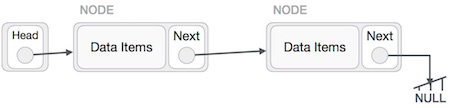
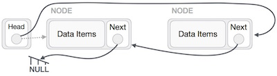

A linked-list is a sequence of data structures which are connected together via links.
Linked List is a sequence of links which contains items. Each link contains a connection to another link. Linked list the second most used data structure after array. Following are important terms to understand the concepts of Linked List.
Link − Each Link of a linked list can store a data called an element.
Next − Each Link of a linked list contain a link to next link called Next.
LinkedList − A LinkedList contains the connection link to the first Link called First.
Linked list can be visualized as a chain of nodes, where every node points to the next node.

As per above shown illustration, following are the important points to be considered.
Following are the various flavours of linked list.
Simple Linked List − Item Navigation is forward only.
Doubly Linked List − Items can be navigated forward and backward way.
Circular Linked List − Last item contains link of the first element as next and and first element has link to last element as prev.
Following are the basic operations supported by a list.
Insertion − add an element at the beginning of the list.
Deletion − delete an element at the beginning of the list.
Display − displaying complete list.
Search − search an element using given key.
Delete − delete an element using given key.
Adding a new node in linked list is a more than one step activity. We Shall learn this with diagrams here. First, create a node using the same structure and find the location where it has to be inserted.

Imagine that we are inserting a node B (NewNode), between A (LeftNode) and C (RightNode). Then point B.next to C
NewNode.next −> RightNode;
It should look like this −

Now the next of the node at left should point to the new node.
LeftNode.next −> NewNode;

This will put the new node in the middle of the two. The new list should look like this −

Similar steps should be taken if the node being inserted at the beginning of the list. While putting it at the end, then the second last node of list should point to new node and the new node will point to NULL.
Deletion is also a more than one step process. We shall learn with pictorial representation. First, locate the target node to be removed, by using searching algorithms.

The left (previous) node of the target node now should point to the next node of the target node −
LeftNode.next −> TargetNode.next;

This will remove the link that was pointing to target node. Now we shall remove to what target node is pointing.
TargetNode.next −> NULL;

We need to use the deleted node we can keep that in memory otherwise we can simply deallocate memory and wipe off the target node completely.

This operation is a thorough one. We need to make the last node be pointed by the head node and reverse the whole linked list.
First, we traverse to the end of the list. It should be pointing to NULL. Now we shall make it to point to its previous node −

We have to make sure that last node is not the lost node, so we'll have some temp node, which looks like the head node pointing to the last node. Now we shall make our all our left side nodes to point to their previous nodes one by one.

Except the node (first node) pointed by the head node, should point to their predecessor and making them their new successor. The first node will point to NULL.
We'll make the head node to point the new first node by using temp node.

The linked-list is now reversed. To see linked-list implementation in C programming language, please click here.